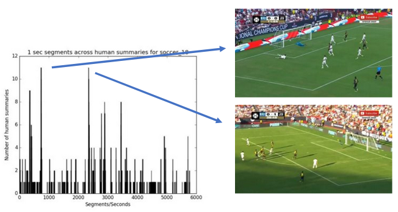

A New
Dataset and Evaluation Framework for Realistic Video Summarization
Automatic video summarization is still an unsolved problem due to several challenges. Lack of a challenging
dataset and a rich automatic evaluation framework are the two issues often talked about in
literature. We
introduce a new benchmarking video dataset called VISIOCITY (VIdeo SummarIzatiOn based on Continuity, Intent
and
DiversiTY). While currently available datasets either have very short videos or have few long videos of only
a
particular type (Table 1), VISIOCITY is a diverse collection of 67 long videos spanning across six different
categories with dense concept annotations (Table 2). Due to its rich annotations, it supports different
flavors of
video summarization and other vision problems like event localization or action recognition as well. More details about VISIOCITY can be found in the paper here.

Table 1: Comparison with other datasets

Table 2: VISIOCITY Stats

VISIOCITY is a diverse collection of 67 long videos spanning across six different domains: TV shows (Friends) ,
sports (soccer), surveillance, education (tech-talks), birthday videos and wedding videos.
- TV shows contains videos from a popular TV series Friends. They are typically more aesthetic in
nature
and professionally shot and edited.
- In sports category, VISIOCITY contains Soccer videos. These videos
typically
have well defined events of interest like goals or penalty kicks and are very similar to each other in terms
of
the visual features.
- Under surveillance category, VISIOCITY covers diverse settings like indoor, outdoor,
classroom, office and lobby. The videos were recorded using our own surveillance cameras. These videos are in
general very long and are mostly from static continuously recording cameras.
- Under educational category,
VISIOCITY
has tech talk videos with static views or inset views or dynamic views.
- In personal videos category, VISIOCITY has
birthday and wedding videos. These videos are typically long and unedited.
A sample from
each category is
shown below.
Figure 1: Clockwise from the top left : soccer_18, friends_1, surveillance_8,
wedding_5,
birthday_10, techtalk_4
- Indirect ground truth
- Concepts marked for each shot
- Allows to "generate" different ground truth summaries required for supervised learning
- Makes annotation process more objective and easier as compared to asking annotators to provide reference
summaries directly or ratings or scores which becomes very difficult for long videos
- Concepts
- Carefully selected based on the type of video
- Organized in categories rather than a flat list
- Example categories include ’actor’, ’entity’, ’action’, ’scene’,
’number-of-people’, etc.
- Categories provide a natural structuring
to make the annotation process easier and also support for at least
one level hierarchy of concepts for concept-driven summarization.
- Mega events
- To mark consecutive shots which together
constitute a cohesive event
- For example, a few shots preceeding a goal in a soccer video, the goal shot and a few shots after the goal
shot together would constitute a 'mega-event'
- A model trained to learn importance scores
(only) would do well to pick up the ’goal’ snippet. However, such a
summary will not be pleasing. The notion of 'mega-events' allows for modeling continuity.(Figure 5)
- Protocol
- 13 professional annotators
- Audio turned off
- GUI tool to make the process easy and error free (Figure 2)
- Gold standard
- Guidelines and protocols were made as objective as
possible
- Annotators were trained through sample annotation
tasks
- Annotation round was followed by two verification
rounds where both precision (how accurate the annotations were)
and recall (whether all events of interest and continuity information
has been captured in the annotations) were verified by another set
of annotators
- Whatever inconsistencies or inaccuracies were found
and could be automatically detected, were included in our automatic
sanity checks which were run on all annotations
Figure 2: Annotation tool
Supervised automatic video-summarization techniques tend to work better than unsupervised techniques because of
learning directly from human summaries. However, since there is
no single 'right' answer (due to reasons
highlighted in Figure 3), two human summaries could be quite different in their selections. For example, as shown in
Figure 4, for soccer_18 video the peaks correspond
to those seconds which got selected in summary by many humans. Yet there are many seconds which have been selected
by only one human.
Figure 3: There can be many "right answers" or ideal summaries

Figure 4: Human selections for soccer_18 video show agreement as well as
dis-agreement; the two peaks (selections where most humans agree) correspond to the two goals in this
video
Thus, more the number of human summaries, better is the learning. Unfortunately, for long videos different human
summaries with diverse characteristics and of different lengths are difficult to obtain. In VISIOCITY we use pareto
optimality to automatically generate multiple reference summaries with different characteristics from indirect
ground truth present in VISIOCITY. For example, maximizing a particular scoring function would yield a summary rich in that particular charcateristic. However, it may fall-short on other characteristics (Figure 5). Hence
different weighted combinations of measures (each modeling
certain characteristic like diversity or continuity or importance) are maximized to arrive at optimal ground truth summaries. We show that these summaries are at par with human summaries (Figure 6, 7, 8).
Figure 5: Automatic ground truth summary f soccer_18 produced by - (left) maximizing only importance score, (right) maximizing only mega-event continuity score
Figure 6: Some human summaries (1, 2, 6, 7) for a 23 mins friends video (friends_5)
Figure 7: Some automatically generated reference summaries for same video
Figure 8: Shot numbers selected by human summaries (left) and by auto summaries (right) for the above summaries of friends_5
A video summary is
typically evaluated by comparing it against a human (reference) summary. This has following
limitations:
- Human summaries are themselves inconsistent with each other
- A workaround is to report the max across many human summaries. This again falls short especially in context of
long videos. A good candidate may get a low score just because it was not fortunate to
have a matching human summary
- Typical measure used is F1 which has its limitations. For example it is not made to measure aspects like
continuity and diversity
Further, a single measure (say F1) to evaluate a summary, as
is the current typical practice, falls short in some ways. One human (good) summary could contain more important but less diverse segments while another human (good) summary could contain more diverse and less imporant segments (Figure 9). In VISIOCITY
we thus use a suite of measures (Figure 10) to capture various
aspects of a summary like continuity, diversity,
redundancy, importance etc. These are computed using the annotations provided in VISIOCITY (indirect ground
truth), as against comparing the candidate summary to ground truth summaries.
Figure 9: Interplay of different measures across different human summaries of
friends_5
Figure 10: Evaluation measures / scoring functions used in VISIOCITY
Code
The code can be downloaded from
this git repository
Tool
- Pre-requisites: python3 and following python packages: tkinter, ffmpeg, opencv, pillow, imagetk, Pmw, bs4
- For annotation:
python tool.py soccer.json
- As annotation viewer:
python tool.py soccer.json vis
- Summary viewer: GUI tool to view a summary, given its JSON. For example:
python3 summaryViewer.py
--video ~/data/soccer/soccer_1.mp4 --summary summary.json --annotation ~/data/soccer/soccer_1.json
--configfile soccer.json
Evaluation
GenerateFrameEvalNumbers.cc: code to compute all scores of a summary based on the frames
contained in the
summary JSONGenerateVisContUniformNumbers.cc: code to compute the visual continuity score and uniformity
score of a
summary, given the summary JSONGenerateAllEvalNumbers.cc: code to compute all scores of a summary based on the snippets
contained in its
summary JSONcomputeScoresOfHuman.py: script to compute all scores of all human summaries given all human
summary JSONs.
For example: python computeScoresOfHuman.py ~/data/ soccer build/ True 2>&1 | tee
soccerHumanScores.logcomputeScoresOfRandom.py: script to compute all scores of all random summaries given all random
summary JSONs
GTSummaryGenerator.cc: code to automatically generate ground truth summary given a configuration
of lambdas.
Utils
hsImageAndHistogram.py:
Utility to create a video overlayed with all human summary selections for that video by all humans and to
produce other statistics of human summaries given the human summary JSONs. summaryFramesToVideoGenerator.py:
Utility to create human summary video given a human summary JSONsummarySnippetsToVideoGenerator.py:
Utility to create a summary video given the snippets information in a summary JSON.
For example, python2 summarySnippetsToVideoGenerator.py soccer_18_imp_mega.json soccer_18.json soccer.json soccer_18.mp4 soccer_18_imp_mega.mp4generateAllHumanSummaryVideos.py: to generate human summary videos for all videos using all human
summary
JSONsrandomSummaryGenerator.py: code to generate random summaries
Videos, Annotations and Summaries
The links to download the videos, annotations and human summaries will be available after filling the following Google form.
VISIOCITY can serve as a
challenging benchmark dataset. We test the performance of a few representative
state-of-the-art techniques of video summarization on VISIOCITY assessed using various measures.
We also leverage
VISIOCITY to demonstrate that with multiple ground truth summaries possessing different characteristics, learning
from a single oracle combined ground truth summary (as is a common practice) using a single loss function is not a
good idea. A simple recipe VISIOCITY-SUM (called "Ours" in Figure 11) uses a simple weighted mixture model and
learns the weights using individual ground truth summaries and a combination of losses (each measuring deviation
from a different characteristic) outperforms the other techniques.

Figure 11: Results using mixture model on VISIOCITY
The videos were partially downloaded from YouTube and some may be subject to copyright. We don't own the copyright of those videos and only provide them for non-commercial research purposes only.
The annotation data can be used freely for research purposes. If you use VISIOCITY or refer to it, please cite the following paper:
@misc{kaushal2021good,
title={How Good is a Video Summary? A New Benchmarking Dataset and Evaluation Framework Towards Realistic Video Summarization},
author={Vishal Kaushal and Suraj Kothawade and Anshul Tomar and Rishabh Iyer and Ganesh Ramakrishnan},
year={2021},
eprint={2101.10514},
archivePrefix={arXiv},
primaryClass={cs.CV}
}
For any communiction regarding VISIOCITY, please contact: Vishal Kaushal [vkaushal at cse dot iitb dot ac dot
in]